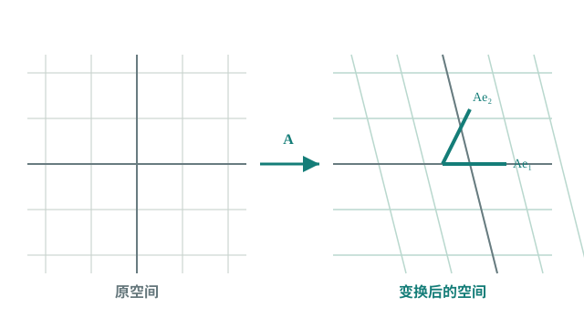

矩阵与线性变换
矩阵不只是按行列排列的数字。它是一条变换规则：输入向量，输出新向量；矩阵的每一列，记录了标准基向量经过变换后的位置。
先提出问题：一个矩阵如何改变整个平面？
如果矩阵把一个点变成另一个点，它如何知道其他所有点该去哪里？关键不是逐点记忆，而是只要知道基向量去了哪里，就能确定整个线性变换。
二维平面中的每个向量都能写成标准基 e₁=(1,0)、e₂=(0,1) 的线性组合。线性变换必须保留加法与数乘，因此它的行为完全由这两个基向量的像决定。
先看图形：网格整体被搬动和拉伸

核心直觉矩阵的两列不是随意的数字：第一列是 T(e₁)，第二列是 T(e₂)。矩阵用这两条“新坐标轴”重建所有输入向量的输出。
建立数学语言：线性映射与矩阵
1. 线性变换必须保留两条规则
映射 T: Rⁿ→Rᵐ 是线性的，当且仅当对所有向量 u、v 和标量 c：
定义 1
把两条规则合并，就得到 T(au+bv)=aT(u)+bT(v)。特别地，T(0)=0；所以平移 T(x)=Ax+b 在 b≠0 时不是线性变换。
2. 矩阵乘向量：列向量的线性组合
设 A 是 m×n 矩阵，x 是 n 维列向量，那么 Ax 是 m 维输出：
这里 aᵢ 是 A 的第 i 列。换句话说，输入坐标 xᵢ 就是选择第 i 列的权重。
3. 矩阵乘法表示复合
先做 B，再做 A，输出是 A(Bx)，所以复合矩阵写成 AB。顺序从右向左读：
推导与例题：为什么矩阵的列就是基向量的像？
设 A=[[2,1],[1,1]]。分别输入 e₁=(1,0)、e₂=(0,1)：
任意输入 x=(x₁,x₂)=x₁e₁+x₂e₂。利用线性性：
维度检查A 有 2 行、2 列，输入必须有 2 个坐标，输出也有 2 个坐标。一般 m×n 矩阵把 Rⁿ 映到 Rᵐ；矩阵乘法的维度规则正是映射能否复合的检查。
再看不交换的例子。令 A 为剪切矩阵，B 为逆时针旋转 90° 的矩阵：
两个结果不同：先旋转再剪切，与先剪切再旋转，通常不是同一件事。
交互实验：改变剪切量
观察水平剪切 A=[[1,s],[0,1]]。它把点 (x,y) 映为 (x+sy,y)。改变 s，网格倾斜程度会改变，但面积不变。
矩阵变换实验室
A = [[1, 0.50], [0, 1]]；det(A) = 1
边界与易错点
- 矩阵与线性变换有关，但不是同一个层次。 线性变换是映射；矩阵是选定基后对映射的坐标表示。
- 矩阵的列对应输入基向量的像。 采用列向量约定时，不能把行列含义颠倒。
- 乘法顺序不能随意交换。 AB 表示先 B 后 A。
- 线性映射固定原点。 带非零平移项的仿射变换不是线性映射。
自测：从矩阵读出变换
题目：A=[[1,2],[0,1]] 把 e₁、e₂ 分别映到哪里？
A e₁=(1,0)，A e₂=(2,1)。第一列和第二列分别就是两个标准基向量的像。
题目：为什么一个 3×2 矩阵不能直接乘一个三维列向量？
矩阵有 2 列，输入必须有 2 个分量；它表示从 R² 到 R³ 的映射，输出才是三维向量。